高层办公建筑 · 方案汇报
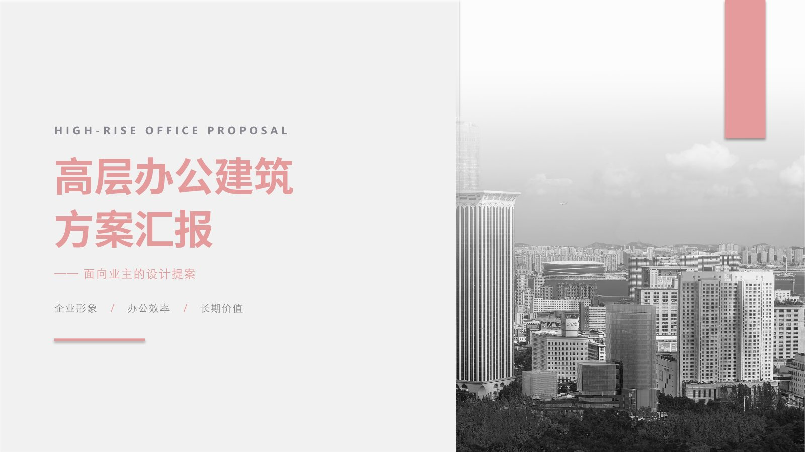
面向业主的设计提案：把一栋高层办公楼，讲成三个业主听得懂的问题——企业形象、办公效率、长期价值。
王然 大连理工大学 · 建筑学 · 2027 届 | 求职方向：线下零售 / 商业运营
高层办公建筑的价值？
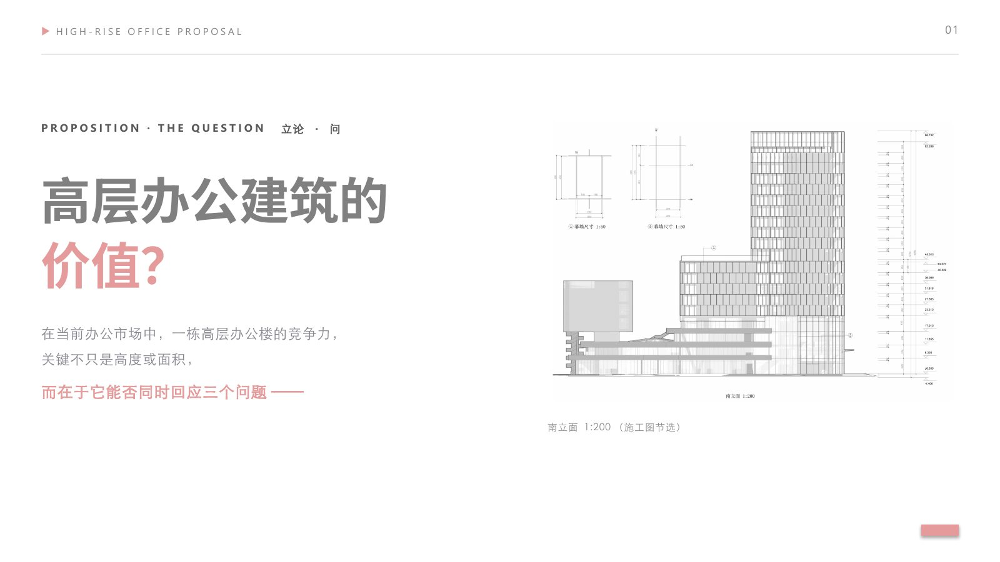
在当前办公市场中，一栋高层办公楼的竞争力，关键不只是高度或面积，而在于它能否同时回应三个问题。
本页先立问题，下一页给三个回答。
来源：本页底图为南立面 1:200（施工图节选），文字与原页一致。
三个回答：形象、效率、价值
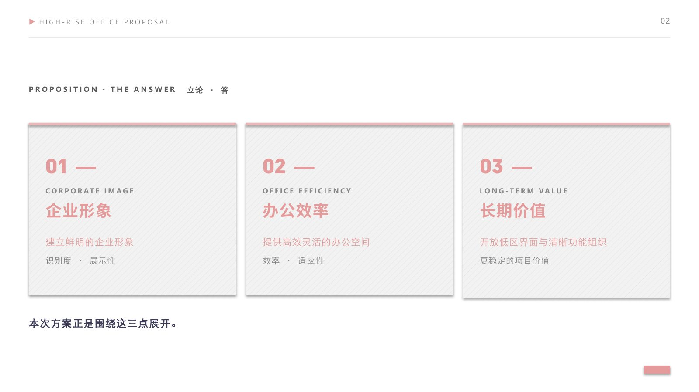
本次方案正是围绕这三点展开。
01 企业形象 CORPORATE IMAGE
02 办公效率 OFFICE EFFICIENCY
03 长期价值 LONG-TERM VALUE
来源：立论·答页原样。
项目定位：从构成美学出发，回应场地关系
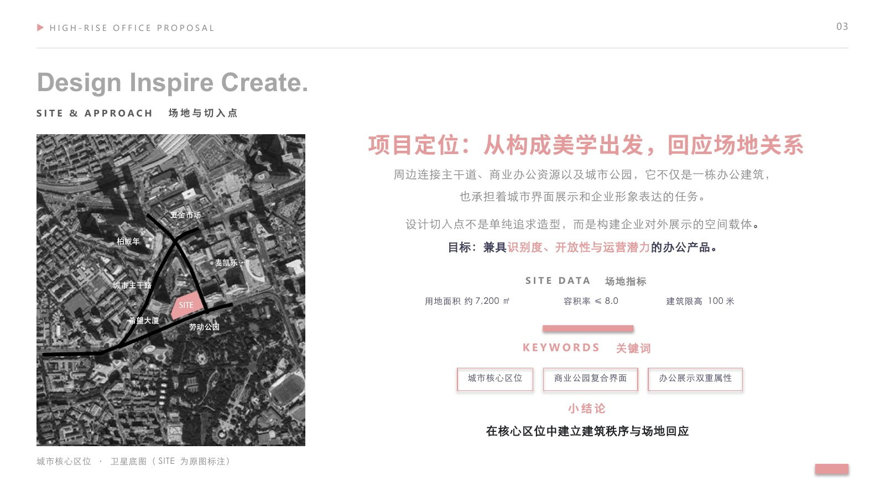
基地位于城市核心区位，周边连接主干道、商业办公资源以及城市公园。它不只是一栋办公建筑，也承担着城市界面展示和企业形象表达的任务。
设计切入点不是单纯追求造型，而是构建企业对外展示的空间载体；目标是兼具识别度、开放性与运营潜力的办公产品。
SITE DATA 场地指标
关键词
来源：本页卫星底图为原图标注（SITE）；场地指标与原页一致。
要素一：塑造可识别的企业形象
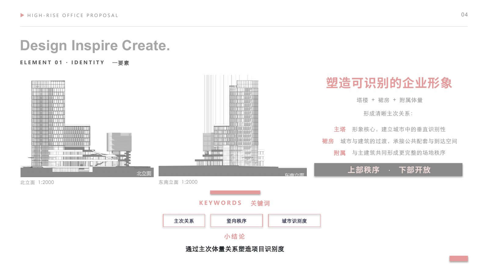
塔楼＋裙房＋附属体量，形成清晰主次关系——上部秩序、下部开放。
关键词
来源：要素一页原样；小结论「通过主次体量关系塑造项目识别度」。
要素二：以开放界面提升项目吸引力
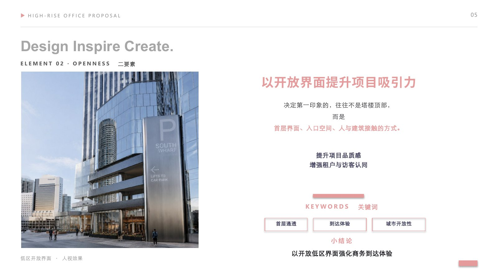
决定第一印象的，往往不是塔楼顶部，而是首层界面、入口空间、人与建筑接触的方式。
关键词
来源：要素二页原样；小结论「以开放低区界面强化商务到达体验」。
要素三：清晰的功能分层与运营逻辑
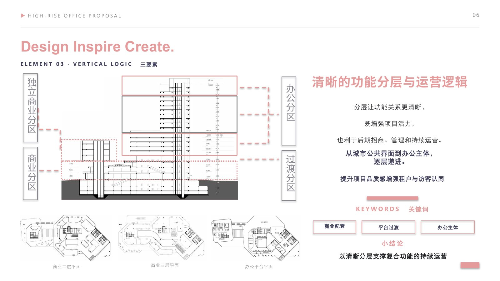
分层让功能关系更清晰，既增强项目活力，也利于后期招商、管理和持续运营。从城市公共界面到办公主体，逐层递进。
图上平面
- 商业二层平面
- 商业三层平面
- 办公平台平面
分区
来源：要素三页原样；小结论「以清晰分层支撑复合功能的持续运营」。
要素四：灵活高效的办公空间组织
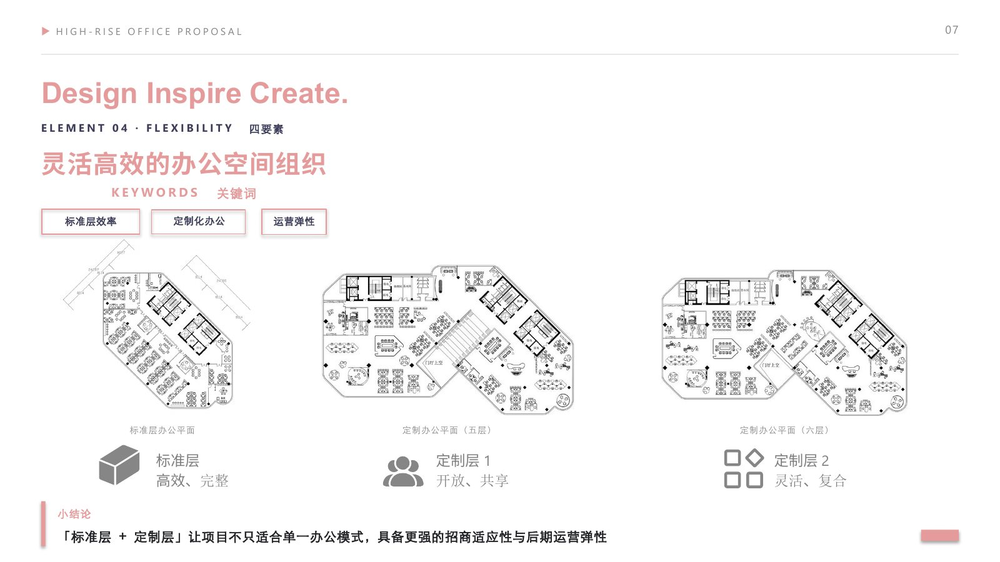
「标准层＋定制层」让项目不只适合单一办公模式，具备更强的招商适应性与后期运营弹性。
图上平面
- 标准层办公平面
- 定制办公平面（五层）
- 定制办公平面（六层）
关键词
来源：要素四页原样。
首层平面 GROUND FLOOR PLAN 1:200
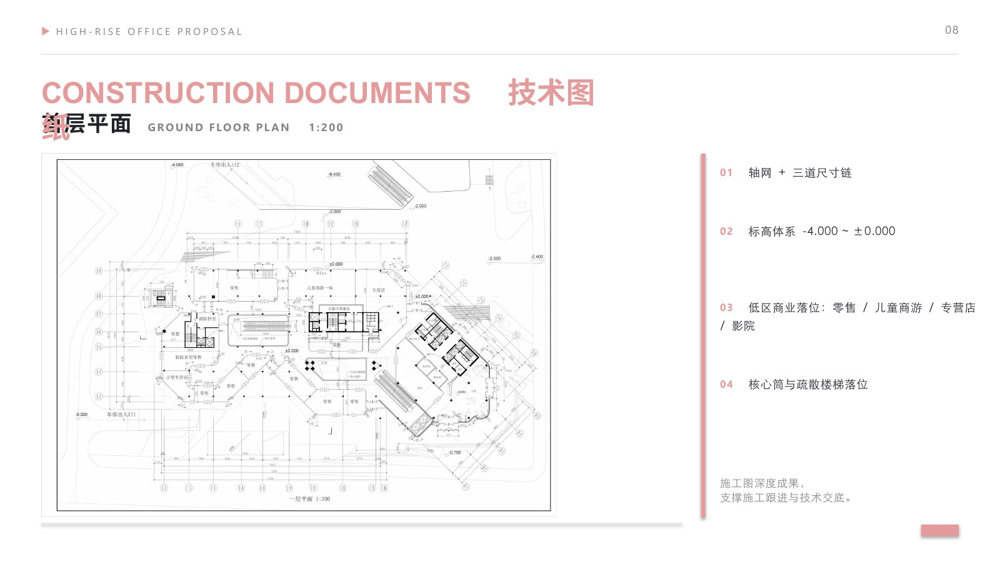
施工图深度成果，支撑施工跟进与技术交底。
- 01轴网＋三道尺寸链
- 02标高体系
-4.000 ~ ±0.000
- 03低区商业落位
零售 / 儿童商游 / 专营店 / 影院
- 04核心筒与疏散楼梯落位
来源：册内「技术图纸」章节，内容与原页一致。
标准层平面 TYPICAL FLOOR PLAN 1:200
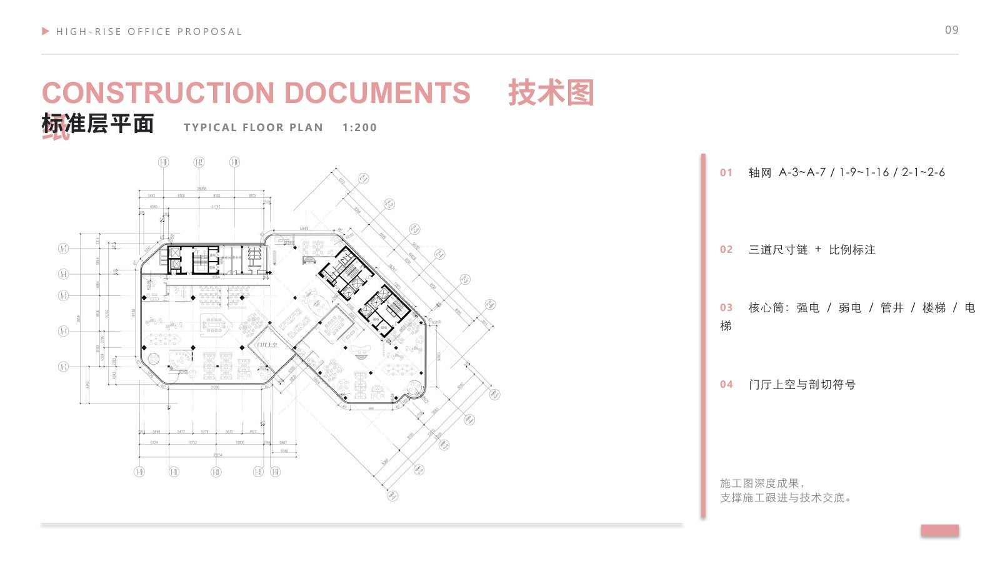
施工图深度成果，支撑施工跟进与技术交底。
- 01轴网
A-3~A-7 / 1-9~1-16 / 2-1~2-6
- 02三道尺寸链＋比例标注
- 03核心筒
强电 / 弱电 / 管井 / 楼梯 / 电梯
- 04门厅上空与剖切符号
来源：册内「技术图纸」章节，内容与原页一致。
标准层平面 TYPICAL FLOOR PLAN 1:200（第二页）
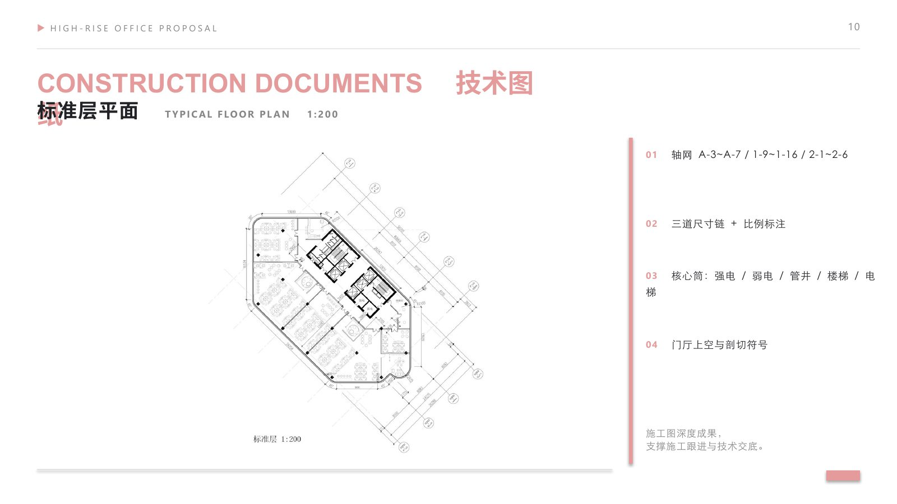
施工图深度成果，支撑施工跟进与技术交底。
- 01轴网
A-3~A-7 / 1-9~1-16 / 2-1~2-6
- 02三道尺寸链＋比例标注
- 03核心筒
强电 / 弱电 / 管井 / 楼梯 / 电梯
- 04门厅上空与剖切符号
注：本页与 P10 为同一张标准层平面图，两页版式略有差异（手改版保留两页）。
1-1 剖面 SECTION 1-1 1:300
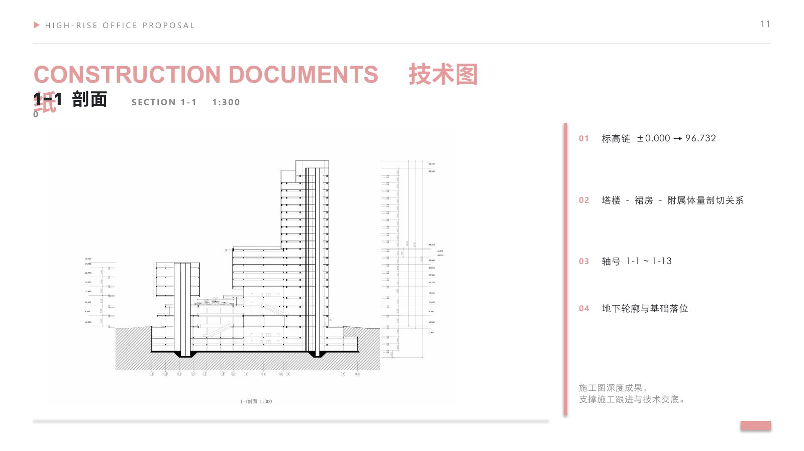
施工图深度成果，支撑施工跟进与技术交底。
- 01标高链
±0.000 → 96.732
- 02塔楼—裙房—附属体量剖切关系
- 03轴号
1-1 ~ 1-13
- 04地下轮廓与基础落位
来源：册内「技术图纸」章节，内容与原页一致。
核心筒平面 CORE WALL PLANS 1:200
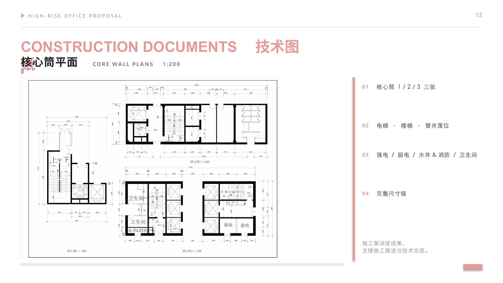
施工图深度成果，支撑施工跟进与技术交底。
- 01核心筒 1 / 2 / 3 三张
- 02电梯 · 楼梯 · 管井落位
- 03强电 / 弱电 / 水井&消防 / 卫生间
- 04完整尺寸链
来源：册内「技术图纸」章节，内容与原页一致。
风廊织境 — 希望广场地块再升级
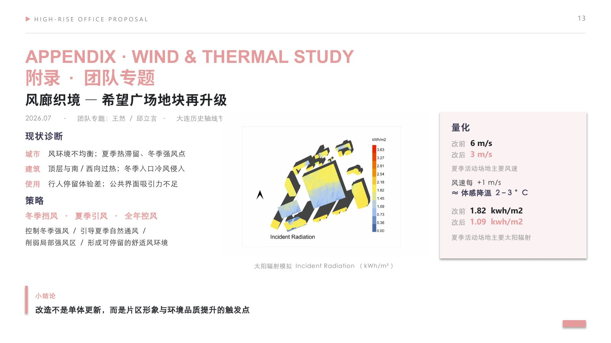
2026.07 · 团队专题：王然 / 邱立言 · 大连历史轴线节点。
现状诊断
策略
冬季挡风 · 夏季引风 · 全年控风——控制冬季强风 / 引导夏季自然通风 / 削弱局部强风区 / 形成可停留的舒适风环境。
量化
来源：团队专题页原样；分工口径按册内标注「团队专题：王然 / 邱立言」。小结论：改造不是单体更新，而是片区形象与环境品质提升的触发点。
不止是一栋楼，而是一项办公资产
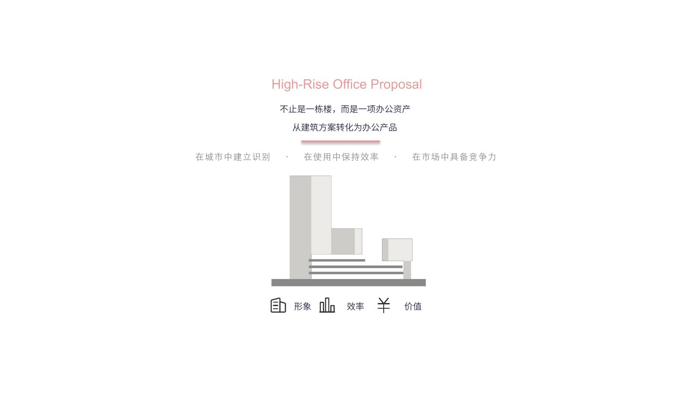
从建筑方案转化为办公产品：在城市中建立识别 · 在使用中保持效率 · 在市场中具备竞争力。
来源：尾页原样。